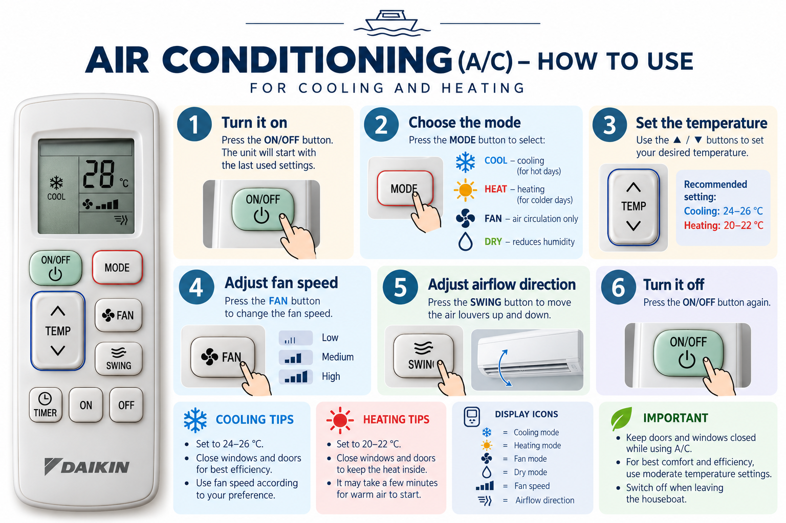

Isıtma ve Soğutma
Uzak kumanda "MODE" düğmesine sahip.
Odayı ısıtmak için, HEAT işareti veya SUN simgesi görünene kadar MODE tuşuna basın. Birimin ısıtmaya başlaması birkaç dakika sürebilir.
Odayı soğutmak için, COOL işaretini veya SNOW simgesini görene kadar MODE'e basın. Birimin ısıtmaya başlaması birkaç dakika sürebilir.
Diğer modlar genellikle kullanılmamaktadır.
A / C için uzaktan kumanda simgeleri biraz farklı olabilir


Bu sayfa İngilizce rehberden otomatik olarak çevrilmiştir. Şüphe durumunda İngilizce sürüm geçerlidir. İngilizce orijinal